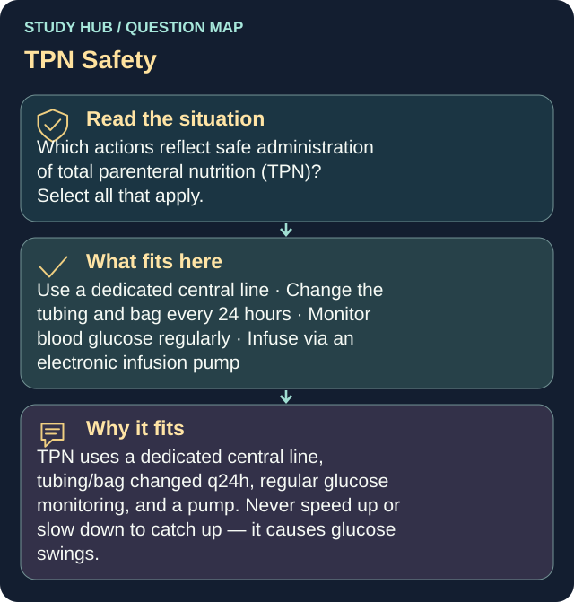

Which actions reflect safe administration of total parenteral nutrition (TPN)? Select all that apply.
Answers
- Use a dedicated central line
- Change the tubing and bag every 24 hours
- Monitor blood glucose regularly
- Infuse via an electronic infusion pump
Reasoning
TPN uses a dedicated central line, tubing/bag changed q24h, regular glucose monitoring, and a pump.
Clinical detail
Never speed up or slow down to catch up — it causes glucose swings.
Why the other answers do not fit
- Increase the rate to 'catch up' if behind
Never speed up or slow down to catch up — it causes glucose swings.
